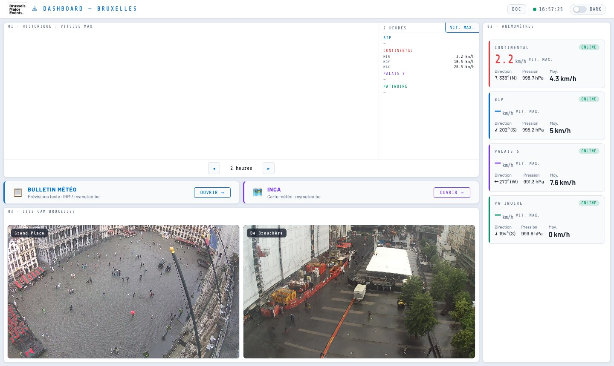
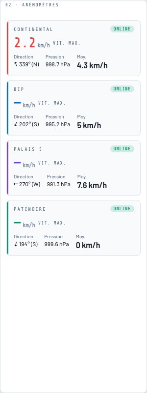
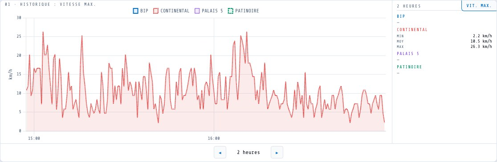
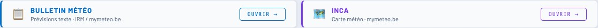
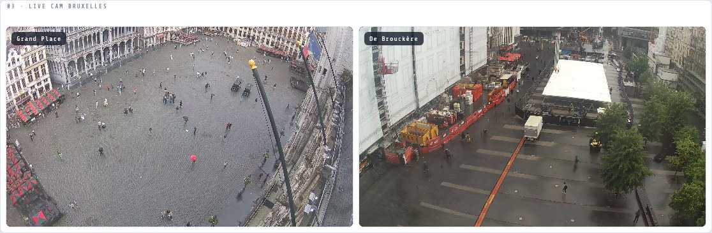
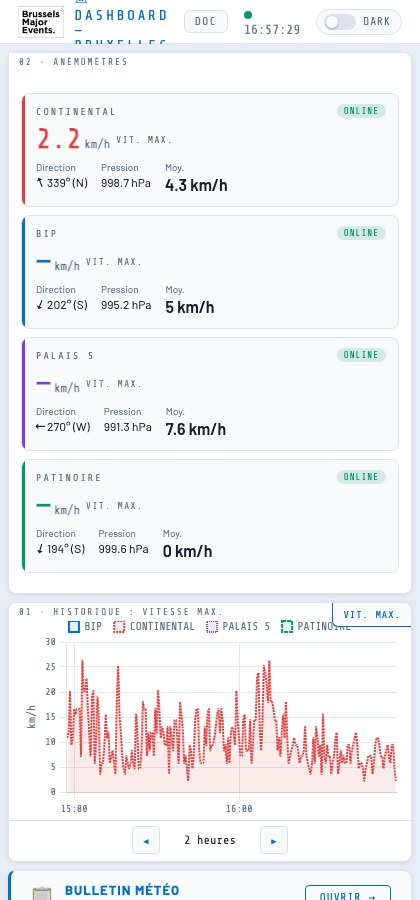
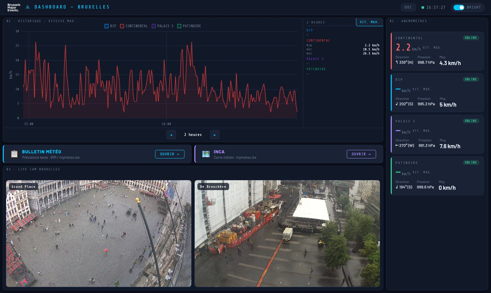

Guide d'utilisation
Tout ce qu'il faut savoir pour lire et utiliser le tableau de bord des conditions de vent à Bruxelles — sans jargon technique.
À quoi ça sert ?
Le Dashboard Vents permet de suivre en temps réel le vent à Bruxelles grâce à 4 anémomètres répartis dans la ville. Il s'actualise automatiquement toutes les 6 secondes — aucune manipulation nécessaire.

L'interface en un coup d'œil
L'écran est découpé en 4 zones disposées en grille. La barre du haut affiche l'heure en direct et permet de basculer entre le thème clair et sombre.

| Zone | Ce qu'elle montre | Actualisation |
|---|---|---|
| 🌬️ Anémomètres | Données vent en temps réel · 4 stations | Toutes les 6 secondes |
| 📈 Historique | Courbe des vitesses passées | Toutes les 30 secondes |
| ☁️ Météo IRM | Liens vers les prévisions officielles | — |
| 📷 Webcams | Flux vidéo live Grand Place & De Brouckère | Continu |
Les anémomètres
C'est la zone principale. Elle affiche en temps réel les données de 4 stations équipées d'anémomètres à Bruxelles :
| Station | Couleur | Localisation |
|---|---|---|
| BIP | ● Bleu | Centre de Bruxelles |
| CONTINENTAL | ● Rouge | Bruxelles |
| PALAIS 5 | ● Violet | Bruxelles |
| PATINOIRE | ● Vert | Bruxelles |

Que signifient les chiffres ?
| Donnée | Explication |
|---|---|
| Vitesse max. (3 sec) | La rafale : la vitesse la plus élevée enregistrée sur les 3 dernières secondes. C'est le chiffre le plus important pour évaluer le danger. |
| Moy. | La vitesse moyenne du vent sur la même période. Généralement inférieure à la rafale. |
| Direction | D'où vient le vent, en degrés et en point cardinal (N, NE, E, SE, S, SW, W, NW). La flèche indique la provenance. |
| Pression | La pression atmosphérique en hPa. Une baisse rapide signale souvent l'arrivée d'une perturbation. |
Les couleurs d'alerte
La valeur de rafale change de couleur selon le niveau de vent :

Le badge ONLINE / OFFLINE
Chaque carte affiche un petit badge dans le coin supérieur droit :
- ● ONLINE — La station fonctionne et envoie des données.
- ● OFFLINE — La station est hors ligne (panne, maintenance). Les données affichées peuvent être obsolètes.
L'historique des vitesses
Le graphique montre l'évolution du vent dans le temps pour les 4 stations. Chaque courbe correspond à une station, avec le même code couleur que les cartes.

Changer la fenêtre de temps
Les boutons ◂ et ▸ en bas du graphique permettent de réduire ou d'étendre la période affichée, de 15 minutes jusqu'à 3,5 jours :
Affiche une fenêtre plus courte — les détails sont plus visibles (ex. : 15 min, 30 min, 1 heure).
Affiche une fenêtre plus longue — utile pour voir les tendances de la journée ou des jours précédents.
VIT. MAX. vs VIT. MOY.
Le bouton en haut à droite du graphique bascule entre deux modes :
- VIT. MAX. — Affiche les rafales (pointes de vent). Les courbes sont plus irrégulières.
- VIT. MOY. — Affiche la vitesse moyenne. Les courbes sont plus lisses.
La ligne en pointillés ambrés
Une ligne horizontale dorée apparaît à 35 km/h — le seuil d'attention. Dès qu'une courbe la dépasse, le vent entre en zone d'alerte.
Le tableau de statistiques
À droite du graphique, un petit tableau récapitule pour chaque station, sur la période affichée :
- MIN — vitesse la plus basse enregistrée
- MOY — moyenne sur toute la période
- MAX — rafale la plus élevée
Météo IRM
Deux raccourcis vers les services météo officiels de l'Institut Royal Météorologique de Belgique :

| Bouton | Ce qu'il ouvre |
|---|---|
| 📋 Bulletin météo | Le bulletin de prévisions météo textuelles de l'IRM pour la Belgique (mymeteo.be). Utile pour avoir les prévisions du jour ou du lendemain. |
| 🗺️ INCA | La carte météo interactive haute résolution — visualise en direct le vent, la pluie et d'autres paramètres sur toute la Belgique. |
Ces liens s'ouvrent dans un nouvel onglet. Le dashboard reste ouvert en arrière-plan.
Webcams live
Deux caméras de la Ville de Bruxelles diffusées en continu :

| Caméra | Vue |
|---|---|
| Grand Place | La Grand-Place de Bruxelles — vue sur la place depuis les hauteurs |
| De Brouckère | La place De Brouckère — vue sur le centre-ville |
Sur smartphone
Sur mobile, une seule caméra est affichée à la fois. Le bouton ↔️ permet de basculer entre Grand Place et De Brouckère.

Thème clair / sombre
Le bouton en haut à droite de l'interface bascule entre le thème clair (par défaut) et sombre. Votre préférence est sauvegardée automatiquement — elle sera appliquée à la prochaine ouverture.

Dépannage
Quelques situations fréquentes et leur explication :